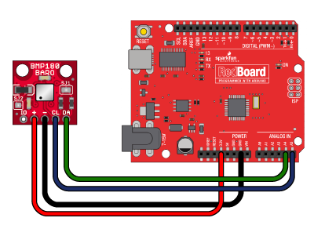
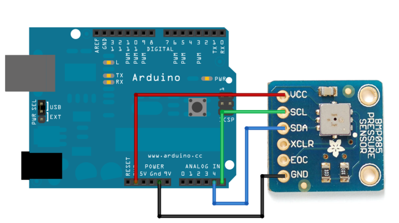

Arduino Project: BMP180 Digital Barometric Pressure Sensor {#arduino-project-bmp180-digital-barometric-pressure-sensor}
May 8, 2014
BMP180 Digital Barometric Pressure Sensor
Once again the folks over at Sparkfun out do the folks at Ada Fruit - Starting to worry about the people at Ada Fruit they are slipping alittle. LOL
There is more information about this sensor then I could possibly give you, they even go into what pascal are (Pa, Basicly it’s a measure of force per unit area, defined as one newton per square metre - You get all that...yeah, see Sparkfun explains it beter)
https://learn.sparkfun.com/tutorials/bmp180-barometric-pressure-sensor-hookup-/under-pressure
The device that Sparkfun has is different, from what the club has, but it’s almost the same, it’s close enough that their tutorial works really well. The sensor on it is the same sensor that on the clubs BMP180.
The device is an I2C device, it is very easy to hook up. SDA, SCL (Data and Clock), 3.3v and ground, that is it. On the UNO it’s SDA to A4, SCL to A5
The other VCC connector on the board is for voltages lower then 3.3v

Ada Fruit does have plenty of information about this sensor as well, and their sensor looks more like what the club has.
http://www.adafruit.com/products/1603 and https://learn.adafruit.com/bmp085
The problem I had with Adafruits was the sketch didn’t seem to give as much or as good information as what Sparkfun did.

Adafruits also requires one extra library which wasn’t included in the download package provided, that caused an issue for about 2 mins until I realized it called a different library. Not sure why they did that, but after I got the 2nd library it did work, just didn’t seem as good as Sparkfun.
The outputs from the sensor, are Pressure, Temperature, and Altitude (Altitude can be both above sea-level and as a relative from it’s starting point), this is a very cool sensor, and with the addition of the humitdy sensor and maybe a wind speed sensor, this could be a complete low cost weather station.